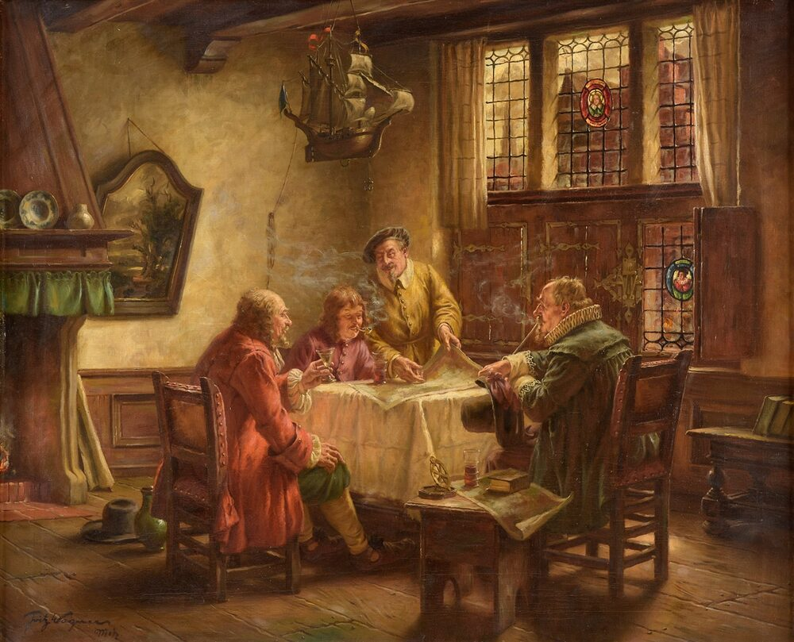

B1 · Work & Career
Working for Yourself
A freelance accountant on the work, the clients, and the two things nobody warns you about.
Play the audio and follow along, then read it again on your own. Tap or hover over a highlighted word to see what it means.
I have been working as a freelance accountant for six years. Before that I spent nine years at a firm, which I mention because people considering the move usually want to know whether it is better, and the honest answer is that it is different in ways that suit some people and make others miserable.
The work itself is much the same. Last month I prepared a year-end report for a retail client, reconciled three months of bank statements that had not been touched since March, and found a discrepancy in the ledger that turned out to be a supplier invoice entered twice. That last one took an afternoon to find and about four seconds to fix, which is the shape of a great deal of this job.
At the moment I am handling a client's year-end closing, and I am also training on a new accounting system because two of my clients are moving to it and I would rather learn it before they do than after. Next month I will start an audit for somebody new, and in six months I will present a full-year plan to my largest client, which is the piece of work the whole year is arranged around.

What is genuinely better is the control. I choose the clients, which means I have stopped working for the two who used to ruin my Decembers. I work the hours that suit the work rather than the hours that suit an office, and if the report is finished at two in the afternoon I stop. Nobody has ever asked me to look busy.
The first thing nobody warns you about is that you are not paid for a large part of what you do. Quoting, invoicing, chasing invoices, keeping your own books, the conversation with a prospective client who then disappears — none of that is billable, and it takes a day a week. If you calculate your rate from your old salary and divide by working hours, you will price yourself too low, and this is the single most common mistake people make in their first year.
The second is the loneliness, which sounds soft and is not. In a firm you ask the person opposite whether a treatment is right and get an answer in ten seconds. Alone you either look it up, which takes an hour, or you carry the uncertainty. I now pay to be part of a small professional group precisely so that I have someone to ask, and it is the most useful money I spend.

Would I go back? No. But I would tell anyone considering it that the skill you need most is not technical. It is being able to say what you charge, out loud, to somebody's face, without apologizing for it.
Key Vocabulary
- firm a business, especially one providing professional services
- to prepare to produce a document ready for use
- to reconcile to check two sets of financial records against each other
- bank statement the record of what has gone in and out of an account
- discrepancy a difference between figures that should match
- ledger the main record of a business's financial transactions
- supplier a company that provides goods or services to another
- invoice a document requesting payment for work done
- year-end closing the work of finalising a company's accounts for the year
- audit a formal examination of financial records
- to quote to state in advance what a piece of work will cost
- to chase to pursue someone for something they owe you
- prospective possible in the future; not yet confirmed
- billable able to be charged to a client
- rate the amount you charge per hour or per job
- to carry uncertainty to continue working without being sure you are right
Working for Yourself — B1 · Work & Career · Renan the Teacher, English Language Academy · https://renangrossi.github.io/englishclasses/reading/b1/a-freelance-accounting-assignment.html
Interactive Exercises
Practice
Complete each exercise, then click Submit to see your score and an explanation for every answer.
Speaking & Writing
Discussion
There are no right answers here — use these to practice speaking, or write a short answer to each.
- “Nobody has ever asked me to look busy.” Is that a real benefit, or a small one made to sound large?
- A day a week of unpaid work changes the arithmetic entirely. How should someone price for that?
- She pays for a professional group so she has someone to ask. What does your own work give you that you would have to buy if you left?
- Is saying your price without apologizing a skill that can be learned, or a matter of temperament?
- Write about 150 words comparing working for yourself with working for an employer, using the past for what you did and the present for what you do now.